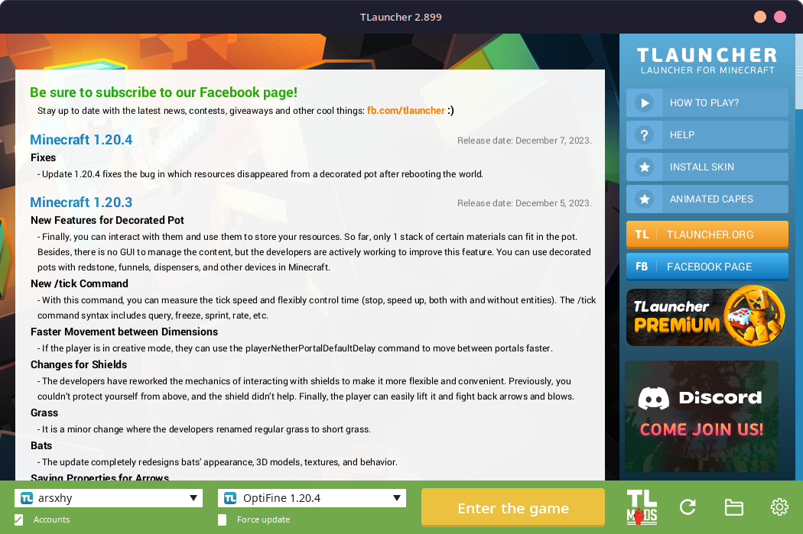
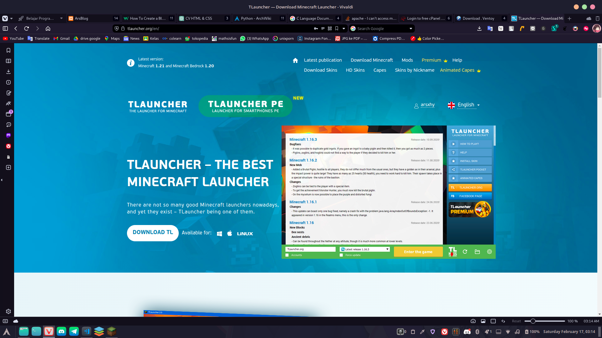
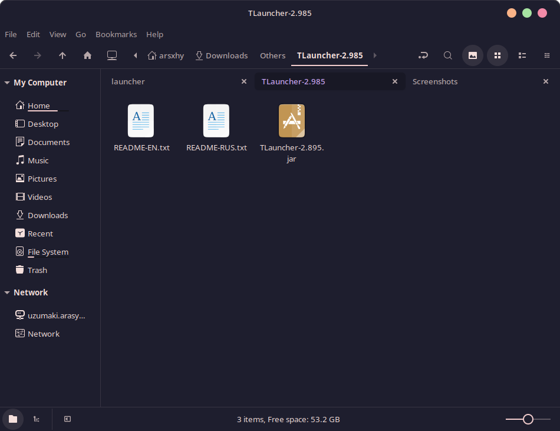
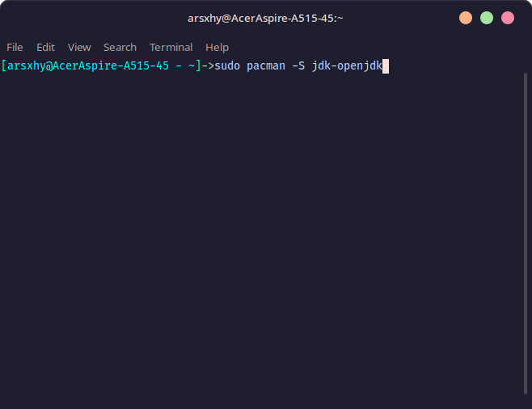
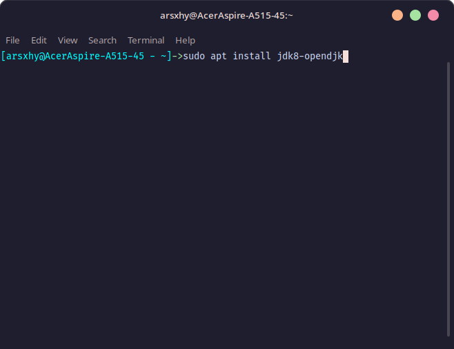
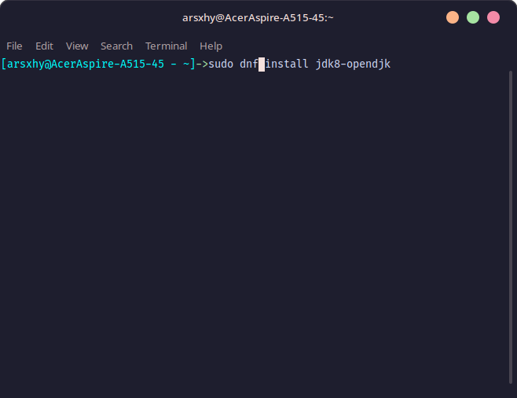
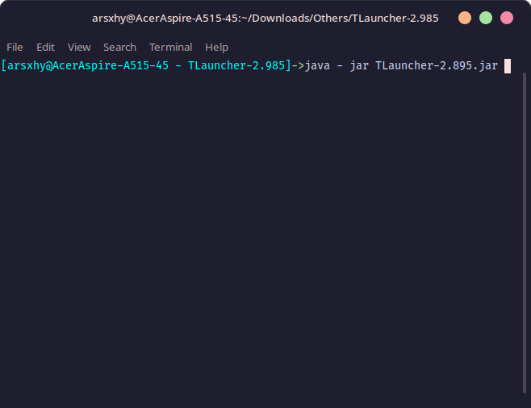
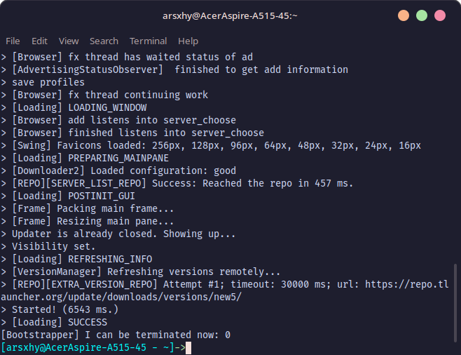

Tutorial Instalasi TLauncher di Linux
Assalamualaikum Wr Wb. Kembali lagi bersama saya di Tutorial kali ini saya akan memberitahu kalian cara untuk instalasi TLauncher di Linux.
TLauncher adalah salah satu launcher untuk memainkan game Minecraft di Laptop atau PC. Akan tetapi karena Minecraft yang aslinya harganya mahal
banyak orang yang menggunakan versi bajakannya karena tidak sanggup untuk membeli.
Tanpa berbasa-basi langsung saja kita mulai.
1. Download TLauncher dari Website Resminya
TLauncher bisa di download dari Website resminya dengan link berikut ini TLauncher

2. Ekstrak file zip TLauncher nya.
3. Masuk ke dalam folder yang sudah di ekstrak tadi

4. Sebelum mengesekusi file TLauncher.jar nya, pastikan bahasa pemrograman Java sudah terinstal
Hal ini dikarenakan permainan video seperti Minecraft sangat ketergantungan dengan Java sebagai dependensi.
5. Jika belum ada bahasa pemrograman Java yang terinstal, bisa diinstal dengan membuka terminal dan ketikan juga enter perintah berikut:
- Arch linux dan Variannya:
 - Debian/Ubuntu/Linux Mint dan Variannya:
 - Fedora/RHEL/Centos dan Variannya:

6. Jika sudah menginstal Java, maka kita bisa menggunakan perintah berikut untuk menjalankan TLauncher
Buka terminal dan ketikan perintah berikut lalu enter: (pastikan berada di folder TLauncher berada pada saat membuka terminal)

7. Program akan berjalan dan tunggulah sampai selesai dan memunculkan window TLauncher
Sampai ada "Success" keluar di output terminal
